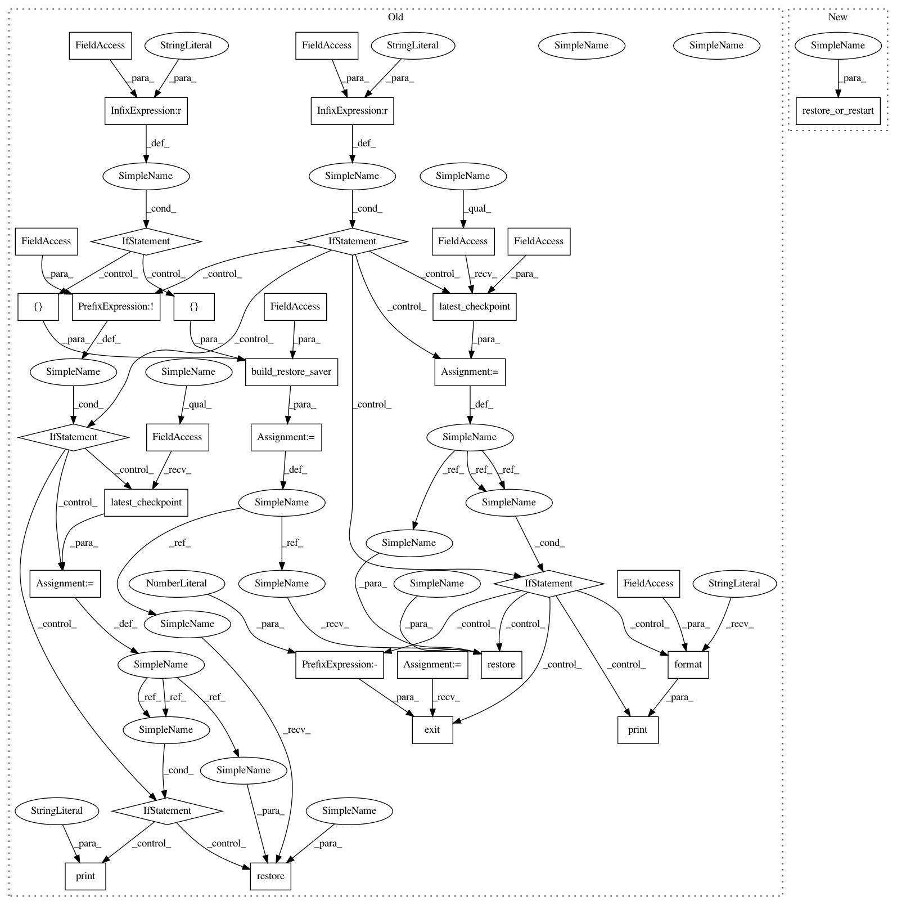

4dd2f9b9520e9bcd1500624a6869cbc43ae79cbc,train.py,,autoencoder,#,185
Before Change
threads = tf.train.start_queue_runners(sess=sess, coord=coord)
// Create the savers.
restore_saver = build_restore_saver(
[global_step] if ARGS.checkpoint_path == "" else [],
scopes_to_remove=ARGS.exclude_scopes)
train_saver, best_saver = build_train_savers([global_step])
if ARGS.checkpoint_path != "":
checkpoint = tf.train.latest_checkpoint(ARGS.checkpoint_path)
if checkpoint:
restore_saver.restore(sess, checkpoint)
else:
print("[E] {} not valid".format(ARGS.checkpoint_path))
sys.exit(-1)
elif not ARGS.restart: // continue from the saved checkpoint
// restore previous session if exists
checkpoint = tf.train.latest_checkpoint(LOG_DIR)
if checkpoint:
restore_saver.restore(sess, checkpoint)
else:
print("[I] Unable to restore from checkpoint")
train_log, validation_log = build_loggers(sess.graph)
// Extract previous global step value
old_gs = sess.run(global_step)
After Change
threads = tf.train.start_queue_runners(sess=sess, coord=coord)
// Create the savers.
restore_or_restart(sess, global_step)
train_saver, best_saver = build_train_savers([global_step])
train_log, validation_log = build_loggers(sess.graph)
// Extract previous global step value
In pattern: SUPERPATTERN
Frequency: 3
Non-data size: 33
Instances
Project Name: galeone/dynamic-training-bench
Commit Name: 4dd2f9b9520e9bcd1500624a6869cbc43ae79cbc
Time: 2017-02-02
Author: nessuno@nerdz.eu
File Name: train.py
Class Name:
Method Name: autoencoder
Project Name: galeone/dynamic-training-bench
Commit Name: 4dd2f9b9520e9bcd1500624a6869cbc43ae79cbc
Time: 2017-02-02
Author: nessuno@nerdz.eu
File Name: train.py
Class Name:
Method Name: detector
Project Name: galeone/dynamic-training-bench
Commit Name: 4dd2f9b9520e9bcd1500624a6869cbc43ae79cbc
Time: 2017-02-02
Author: nessuno@nerdz.eu
File Name: train.py
Class Name:
Method Name: classifier
Project Name: galeone/dynamic-training-bench
Commit Name: 4dd2f9b9520e9bcd1500624a6869cbc43ae79cbc
Time: 2017-02-02
Author: nessuno@nerdz.eu
File Name: train.py
Class Name:
Method Name: autoencoder